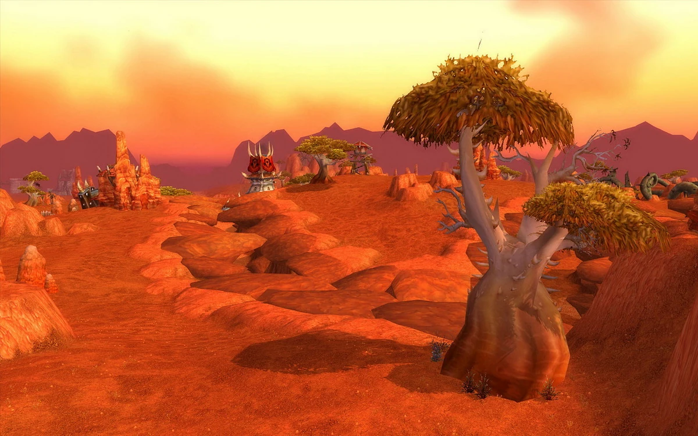

INFORMACIÓN
Esta página web está creada para ayudar a los jugadores de World of Warcraft a poder encontrar parte de los addons que hacen que el juego sea más sencillo, tanto para los jugadores nuevos como para los veteranos de este maravilloso juego creado en 2005. World of Warcraft es un juego de rol masivo en línea (MMORPG) que permite a los jugadores explorar un mundo virtual en constante evolución, enfrentarse a desafíos épicos y formar comunidades dentro del juego. La importancia de los addons radica en que estos mejoran la experiencia de juego al permitir a los jugadores personalizar su interfaz, optimizar el rendimiento y mejorar la interacción con otros jugadores. Los addons pueden hacer que las tareas más repetitivas sean más fáciles de manejar, como la gestión de inventarios, las estrategias de combate y la organización de grupos de jugadores.
En esta página vas a encontrar addons para WOW, clases jugables de WOW con unos addons que yo recomiendo aparte para esta clase y el mapa de WOW con sus zonas y niveles recomendados. Algunos de los addons más populares incluyen aquellos que mejoran la interfaz de usuario, añaden mapas interactivos, o mejoran las características de los combates en las mazmorras. También tenemos recomendaciones específicas para cada clase jugable, desde el Guerrero hasta el Mago, para que puedas optimizar tu experiencia de juego según el estilo de juego que prefieras. Además, si eres nuevo en World of Warcraft, te ofrecemos una guía completa de cómo instalar y configurar estos addons para que puedas empezar a disfrutar del juego sin complicaciones. Por último, no olvides explorar nuestro mapa de WOW, donde podrás encontrar zonas de nivel recomendado, lo que te permitirá aventurarte en las mejores áreas para mejorar tu personaje.
!!DISCLAIMER!!
La página web sigue estando en desarollo , por lo tanto de momento solo hay información disponible para WOW con la versión 1.12.1 (vanilla WOW).